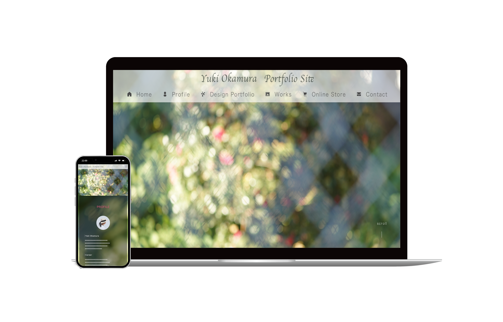

DESIGN PORTFOLIO

- 05

- このポートフォリオサイト
- 制作期間
- 使用ソフト・サーバー
- デザインコンセプト
- コメント
URL : Yuki-Okamura.com
2023.8.25〜2023.9.18 約120時間
Figma / Photoshop / Illustrater / Premiere Pro / Visual Studio Code / X sever
自分で撮影した写真の中で最も気に入っている、椿の花の回転ボケになっている写真をベースにしました。明るく、幻想的で、清々しさの中にちょっとした毒も感じられるようなデザインを目指しました。
初めてモバイルファーストで作成しました。レスポンシブの確認時に崩れてしまっていることが何度もあり、微修正に苦労しましたがレスポンシブ対応へのスキルが向上しました。